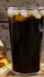

It is one of the most famous dishes in the world.
It is made up of flour, vegetables, sauces and cheese.
There are many types of pizza.Many compaines also deliver pizza at your home.
I love to eat pizza.
Pastries are made of egg and some are eggless too.
Pastries are made up of vannila, chocolate, flour and all the things which are used to make cake.
It has a lot of flavors like vanilla, butterscotch, etc.
I also like to eat pastries.
Burgers originated in USA
Burgers are made up of ham bread, vegetables like lettuce, tomato, onion, cucumber and it has a tikki made of potato.
There are many compaines in the world which sell burgers. Some companies are Burger King, McDonalds and Boxo Burger.
It is very popular in countries like USA, Canada and India.
I love to eat burgers.
French Fries,as the name suggests originated in France
Burgers are made up of potato.
French Fries are usually eaten in combo with Burger and Coldrink.
It is very popular in India.
I love to eat Fries with Burger and Coldrink.

It is consumed with snacks like Burger and French Fries.
It is made up of carbonated water and many flavours and sugar.
Some companies which sell Coldrinks are Coca-Cola, Pepsi and ThumsUp and many more companies.
I love to drink Coldrink with Burger and French Fries.